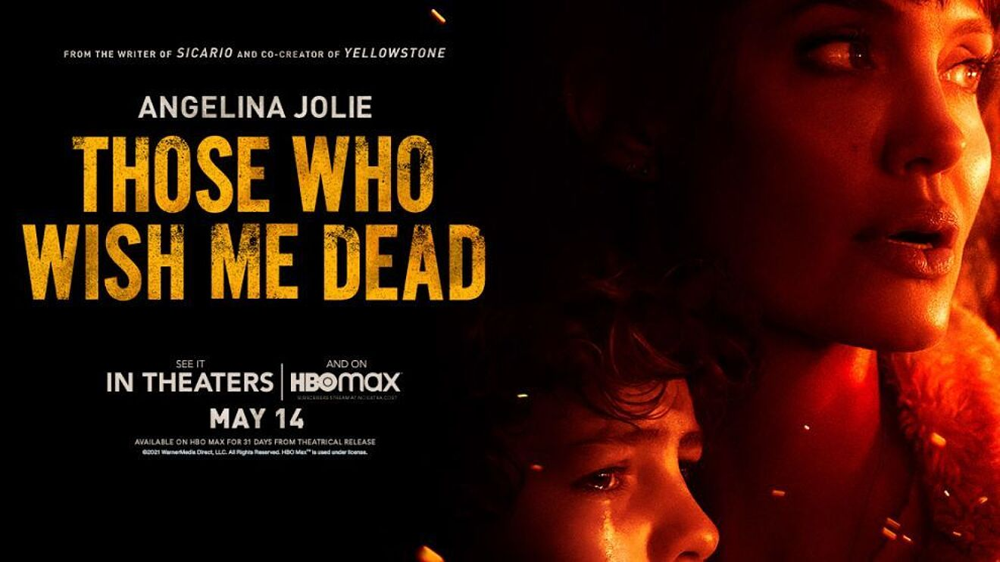

Those who wish me dead
Një adoleshent, dëshmitar i një vrasje e gjen veten të ndjekur
nga vrasësist binjakë në shkretëtirën e Montanës
me një eksperte mbijetese me detyrë ta mbrojë djaloshin - dhe një
zjarr në pyll që kërcënon t'i konsumojë të gjithë.
Titulli origjinal: Those Who Wish me Dead
Filmi fillon: 06.05.2021
Zgjatja e filmit: 119 Minuta
Shteti/Viti: CAN, USA/2019
Lloji: Aksion, Dramë, Triller
Aktorë: Angelina Jolie, Nicholas Hoult, Finn Little, Aidan Gillen, Medina Senghore, Tyler Perry, Jake Weber, Jon Bernthal
Regjisori: Taylor Sherridan
Distributori: Blitz film i video distribucija d.o.o.
Vlerësim: Mbi 17 vjeç
PËRMBAJTJA
Një adoleshent, dëshmitar i një vrasje e gjen veten të ndjekur
nga vrasësist binjakë në shkretëtirën e Montanës
me një eksperte mbijetese me detyrë ta mbrojë djaloshin - dhe një
zjarr në pyll që kërcënon t'i konsumojë të gjithë.
Zgjedh Orarin: 19:00-----------------------20:30